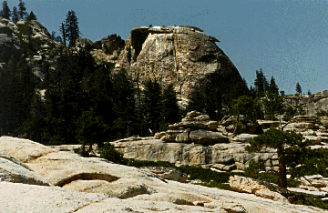

[back to Cañones Software Outfitter]
Minaret Domes
Chiquito Dome is perfect early in the season due to its low elevation. No streams to cross, plenty of morning sun.
Inbetweeny 5.8 Not recommended. In between Archline and The Acolyte. FA: Hae-Rahn Bae, Alan Danker, George Turner, Thomas Hartmann (88).
Unknown 5.10a ** R of Elegance.
Unknown 5.10a *** L of Elegance.
Unknown 5.10b *** Just to the right of Sahib.
Approach: Use Shuteye Pass trail (45 min). It is best to approach the climbs described by rappelling from the top of Fallen Eagle Dome (3 X45m). Follow the trail until you can traverse across the top of the Dome. Walk down (SE) and spot a big single pine tree above a curving slab. Rappel from the tree to anchors. Two more rappels down to a ledge just above the creek (anchors with 2 bolts). Watch for sunbathing rattlesnakes.
Welcome to Fallen Eagle Dome 5.10a ** Camalot #2 recommended. FA: Elaine Cocuzzo, Thomas Hartmann (Memorial Day, '92).
Big brother 5.9 ** Small camming devices to 2 inches required. This climb starts at the very right end of Snake Ledge. This is a serious, traditional climb! FA: Elaine Cocuzzo, Thomas Hartmann (8/15/92).
Judgement Day 5.10a *** Small camming devices required. R of Big Brother. FA: Elaine Cocuzzo, Thomas Hartmann (9/96).
Approach: 45 min. from road. Steep uphill; light bushwhacking close to the rock.
Descent: Rappel Breast Feather (two 45m rappels from trees). If you didn't bring two ropes, or if you feel like hiking, aim S through open talus and around Minerva Dome (40 min.).
Sinners and Saints 5.9+ ** Bring two 50m ropes (to avoid rope drag) and a full rack, including a Camalot #4. FA: Felix Gropp, Roger Leuthner, Thomas Hartmann (10/11/92).
Massively Parallel 5.10d *** Quickdraws only. A second pitch is in progress! R of Sinners...FA: Felix Gropp, Thomas Hartmann (9/20/93). FFA: Roger Leuthner, Stephen Ruoss.
Greed, Envy, Gluttony, Sloth, Lust, Pride, Wrath 5.10a *** Camalot #2, small nuts, slings and quickdraws. Smae start as Massively Parallel. After the first bolt, aim right to a shallow dihedral and a golden streak of knobs. Belay in a small alcove. A second pitch was bolted by anonymous sinners. FA: Elaine Cucuzzo, Thomas Hartmann (9/96).
Fat Lady's Bypass 5.9 * FA Marcia Paik, Thomas Hartmann.
Breast Feather 5.7 ** Full rack, mostly small nuts. FA: Felix Gropp, Thomas Hartmann (6/27/92).
Knob Hill 5.9 ** Full rack. L of Breast Feather. FA: Felix Gropp, Thomas Hartmann (6/27/92).
Approach (A) from Shuteye Peak Road: If you don't have a high-clearance car, park just below Little Shuteye Pass; otherwise, continue as far as you can. After the gate at Little Shuteye Pass, the road gets very rough -- serious 4WD terrain. After you park, cut across through open terrain to the notch and scramble down to base of the S face. (B) It is also possible to approach the Bastion from Shuteye Pass or Minaret Road.

Unknown 5.9 Two pitches, 3 bolts, single-bolt belay. Slings to tie off knobs and a few camming devices are helpful. This hand crack is found in the middle of the S face. The crux is getting to the crack -- then it's fun knob climbing.
Approach: From Minaret Road take the Hell's Half Acre turnout and follow the dirt road downhill for about half a mile. Hike on a logging road until you reach a clearing. Follow disappearing trail S619A until you see the Buttes. Hike along the open ridge and scramble down the east face of the East Butte. Stay close to the wall. You may encounter wet slabs early in the season (45 min.).
Unnamed 5.8 One pitch. Full rack. FA: Jimothy Fahrni, Thomas Hartmann (94).
Approach: (A)When Jackass Creek is difficult to cross, use the approach for East Fuller Buttes. Once you reach the open ridge leading to the top of the Buttes, scramble down the west face of the West Butte. Stay close to the wall -- even then, you will encounter some vicious manzanita. Once you reach the base, the bushwhack is over. The climbs are a few hundred feet up and to the right. (B) Later in the season, a shorter and more enjoyable approach starts at the Jackass Organization Camp. Just before you reach Jackass Rock, take a right turn at the sign for the camp. Follow the dirt road a short distance until it is blocked. Hike along the dirt road for about a mile until you can see the west side of the Butte. Aim for the southern end of the wall. Go down a steep hillside, cross the creek and go straight up to the base of the face (30 min.). (C) The quickest approach is from Road 6S22, the road to Little Jackass Campground. If you find the right approach, it's a 15 min. hike.
Descent: Two 50 m ropes are required for rappels.
Yang 5.10b ** Quickdraws only. FA: Elaine Cocuzzo, Thomas Hartmann (12/95).
Tao 5.9 ** Six bolts, quickdraws only. FA: Thomas Hartmann, Stephen Ruoss (6/96).
Roadkill 5.10b *** FA: Inez Drixelius, Roger Leuthner, Thomas Hartmann.
Autobahn 5.10a *** Small TCUs and a Camalot #4. FA: Inez Drixelius, Roger Leuthner, Thomas Hartmann.
Umleitung 5.9 ** Bring a full rack including one Camalot #4. FA: Elaine Cocuzzo, Felix Gropp, Thomas Hartmann (8/92).
Good and Good for You 5.6 * Three bolts, quickdraws only. FA: Elaine Cocuzzo, Thomas Hartmann (10/91).
Approach: Park anywhere close to the youth camp sign. Follow faint trails to the base. A couple of fine face climbs are found on the E face of this roadside attraction. A couple of new climbs are found to the left of Vicious.
Star Thrower 5.9 * One pitch, 5 slings.
Razor Blade 5.11c One pitch, 4 slings.
Stay tuned. Conrad van Bruggen has been active inthis area recently.
|
Note: |
Routes mentioned as reference points that are not found in this online guide can be found in the Spencer guidebook (see References). |
Other Areas: Shuteye Ridge Area - The Balls
Back to the I n t r o d u c t i o n